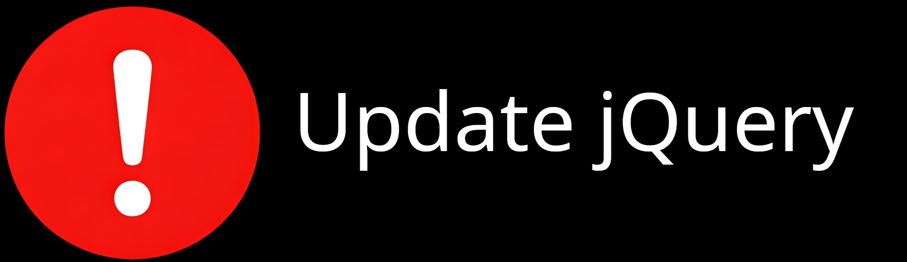

A BCheck for jQuery Version Lower Than 3.5

Summary
This Burp Suite BCheck was written to identify applications using jQuery versions below 3.5. I created it following CISA’s addition to the Known Exploited Vulnerabilities catalog. The goal of the check was to quickly surface these dependencies during testing and make those findings difficult to ignore.
This iteration is intentionally simple and geared toward demonstration. It looks for version strings in HTTP responses that suggest jQuery is present and below 3.5, then raises a finding to draw attention to the issue.
Technical Rationale
Burp Suite labels outdated JavaScript dependencies as low severity, which often leads to them being ignored. However, Federal Civilian Executive Branch (FCEB) agencies must remediate jQuery vulnerabilities in versions below 3.5.0 by February 13, 2025. So, I created this BCheck to streamline detection. It passively flags jQuery versions on the KEV list as I browse an application and raises the severity to high so the issue stands out during testing and remediation discussions.
This works because jQuery versions are frequently exposed in JavaScript comments, banner text, or response bodies. Since that information is often delivered to the browser unchanged, passive detection is straightforward. While this does not prove exploitability, CISA guidance requires remediation regardless. The check simply highlights responses that likely contain outdated jQuery versions so they can be addressed quickly.
Detection Strategy
The check runs passively against responses and searches for strings that indicate jQuery is present along with a version number below 3.5. It looks for several naming patterns, including common forms such as:
- jQuery vX.Y.Z
- jQuery JavaScript Library vX.Y.Z
- jQuery v@X.Y.Z
If a matching pattern is identified and the version appears to fall below 3.5, the BCheck raises a finding indicating that an outdated jQuery version is in use and should be updated or mitigated.
Limitations
This demonstration version is intentionally narrow and does not catch all possible cases. It only looks for a limited set of version-string patterns. jQuery version references are not always presented consistently, so alternative naming conventions are missed. Second, this version does not detect jQuery when it is loaded via a <script> tag reference rather than exposed directly in the response body. That means depending on scan scope, applications relying on external or separately loaded jQuery files may not be flagged by this check. More broadly, the check is only as good as the strings it can see. Minified code, altered banners, removed version text, or custom packaging can all prevent detection.
BCheck Implementation
Below is the compact BCheck implementation with inline comments explaining the detection logic.
/*
This BCheck was written to detect jQuery version 3.4 & below after CISA put it in the known exploited vulnerabilities (KEV) catalog.
To draw attention & ensure updating, it marks the issue as a high severity rather than Burp Suite's typical informational severity.
There is a potential problem in the regex where versions 3.45.0-3.49.99 won't cause the rule to alert. This shouldn't be a problem as
jQuery appears to have abandoned double digit version numbering beginning in verion 2.
*/
metadata:
language: v2-beta
name: "jQuery version below 3.5"
description: "v1.4 Checks if jQuery is in use and if it is not 3.5 or above. jQuery version below 3.5 must be updated or have mitigations put in place before 2/13/25"
tags: "passive"
author: "Bernard Santillan"
given response then
if (latest.response) matches "jQuery v[0-3]\.[0-4]{1, 2}\.[0-9]{1,2}"
or (latest.response) matches "jQuery JavaScript Library v[0-3]\.[0-4]{1, 2}\.[0-9]{1,2}"
or (latest.response) matches "jQuery v@[0-2]\.[0-9]{1,2}\.[0-9]{1,2}]"
or (latest.response] matches "jQuery v@[3]\.[0-4]{1,2}\.[0-9]{1,2}" then
report issue:
severity: high
confidence: certain
detail: "jQuery version below 3.5 in use. This version is on CISA's KEV list and must be updated or mitigated per Cisa guidance "
remediation: "Update Query to 3.5 or greater or implement DomPurify per vendor guidance"
end if